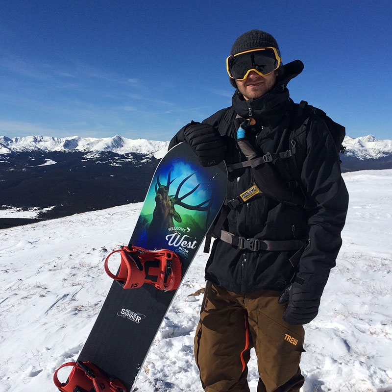

<div id="content">
  <div id="main">
    <div class="container">
      <div class="one_third">
        
      </div>

     <div class="two_third last">
        <h1>Charlie Hoch</h1>
        <div><span style="font-family: Helvetica;"><a href="https://youtu.be/Ls_BfKtUkSc">CLICK HERE TO SEE CHARLIE RIDE</a></span>
        </div>
        <div><strong><br /></strong>
        </div>
        <div><strong style="font-family: Helvetica;">MEET CHARLIE...<span>&nbsp;</span></strong><span>I grew up skateboarding in south Florida and moved to CO when I was 13. Started shredding pow and feel in love with the adventure of being in the backcountry.     Searching for new zones and perfect lines is and always will be a big part of my life. I've been a sponsored athlete with NS for 7 years now and looking     forward to the next 7 with the best company in the biz!</span>
        </div>
        <div>
          <br />
        </div>
        <div><strong style="font-family: Helvetica;">CHARLIE'S FAVORITE NS BOARD IS...&nbsp;</strong><span>Right now my favorite stick is the Ripsaw. Snappy and responsive when you want it, and holds an edge like nothing else on the market. The Ripsaw is a precision     mountain tool.&nbsp;</span>
        </div>
      </div>
      <hr>
  </div>
</div>